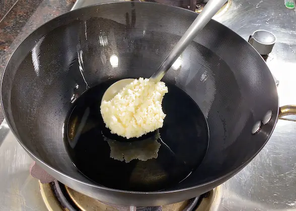
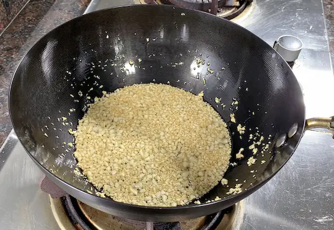
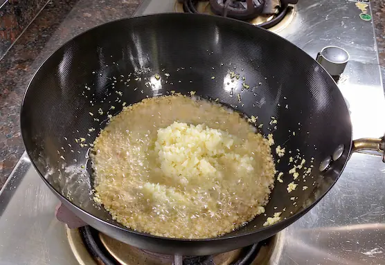
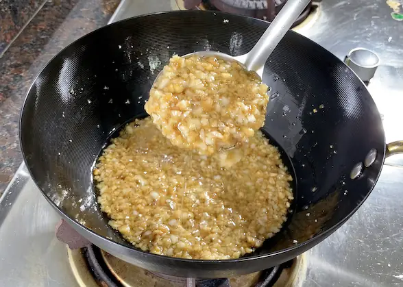

1. 备料蒜蓉
蒜头拍碎，切成蒜蓉，将蒜头冲下水 （去除过重的辛辣味），控干水分，捞出来备用

2. 炸蒜蓉
- 起锅烧油，不需要很多油，油烧至四、五层油温，添加部分蒜蓉进来，转中小火，用锅铲持续翻动，慢慢煸炒；
冲过水的蒜蓉水分比较多，一开始炸的时候，泡沫会比较多；随着水分蒸发，泡沫会逐渐减少；持续炸到微微的金黄色； - 然后把剩下的生蒜蓉放入，翻动混合均衡后；
- 开始调味，加入适量盐、蚝油、生抽、少许鸡粉；继续翻炒下，将调料翻炒均匀就可以了。



